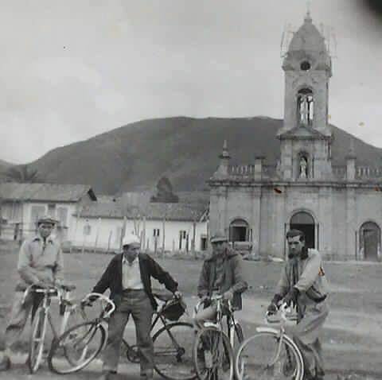

El día 9 de enero de 1593 el Hidalgo Español Jerónimo Holguín en compañía de Misael Millán, fundan a Nobsa en calidad de pueblos de indios la riqueza de esta tierra fértil y acogedora determinó que los habitantes se dedicaran a las labores agrícolas y ganaderas .

Luego de la aguerrida batalla librada entre nuestros indígenas liderados por el cacique TUNDAMA, que si bien es cierto se puede catalogar como heroica, no fue victoriosa y solo mostraba pasajes de barbarie y desolación. El llano de Bonza y el Pantano de Vargas fueron el escenario de tales actos despiadados de dominación y combate quizás injustificado.

Transcurría diciembre del año 1.539. Comenzaría entonces una época de dominio e imposición española, el paso del tiempo marca lineamientos que se plasman en la historia hasta que el sábado 9 de enero de 1.593 el Hidalgo Español Jerónimo Holguín en compañía de Misael Millán, con el propósito de tener apropiación territorial ante la corona española, fundan a Nobsa, en calidad de pueblo de indios; en este momento se divide en dos la historia de aquel caserío el cual comenzaría a formarse con el paso del tiempo en un pueblo de gente noble, laboriosa pujante y emprendedora. La riqueza de esta tierra fértil y acogedora determinó que los habitantes se dedicaran a las labores agrícolas y ganaderas en donde predomina la industria de los tejidos.
En cuanto al aspecto eclesiástico, se puede considerar que la historia "comienza" a partir de 1.703 porque de este año hacia atrás no existen documentos escritos. Por su parte, los archivos existentes en la alcaldía, fueron consumidos por las llamas durante las guerras civiles del siglo XIX. Otra gran cantidad de documentación se perdió en el periodo de la época de la violencia acaecida en los años cuarenta.
La evangelización tiene sus inicios con la llegada de los padres Agustinos en el siglo XVI, cuando se construye la primera iglesia Doctrinera. Por aquella época, la población de Nobsa adquirió gran importancia en materia eclesiástica hasta que, en el año de 1.777, Tibasosa, poblado que se había agregado junto con Chámeza y Firavitoba, optó por la disolución para constituir su propia parroquia. El transcurrir del tiempo marca acontecimientos trascendentales y con el cambio del sistema de gobierno del Nuevo Reino de Granada, hecho que ocurrió a mediados del siglo XVIII, se cambia del sistema de presidencias al Virreinato. Los cabildos municipales se cambiaron por alcaldías Hoy en día el municipio se encuentra dentro de la categoría industrial y hace parte de los municipios de la llamada Provincia del SUGAMUXI, actualmente el territorio de Nobsa se encuentra entre los más pequeños en extensión del departamento de Boyacá, pero con una dinámica de desarrollo muy particular porque se destacan las actividades mineras, artesanales, turísticas, industriales, agrícolas y ganaderas entre otras.
Diferentes procesos históricos han determinado su condición de pueblo industrial de Boyacá, principalmente la construcción de las empresas Acerías Paz del Río y Cementos Boyacá, las cuales generaron la dinámica de diferentes factores sociales, como el surgimiento de acciones migratorias e inmigración; el desplazamiento de mano de obra hacia el sector industrial, el desarrollo de procesos de urbanización y la creación de nuevos valores y referentes culturales. De manera simultánea, la población ha visto crecer las fábricas cementera y siderúrgica, paralelamente con la explotación intensa de los recursos naturales; estos factores han generado una transformación acelerada del paisaje natural y la conformación de asentamientos espontáneos como Nazareth y las Caleras. La ubicación estratégica de Nobsa dentro de la vía nacional que comunica a Bogotá con Belencito, hace de este un municipio con una gran tasa de movilización de vehículos especialmente de carga.
Hoy la población está sobre las estructuras del conocimiento, la formación intelectual, académica y cultural; este proceso se dirige de la mano con el esplendor de la industria, con el despertar de la micro y mediana empresa y con la consolidación del sector prestador de servicios en la base económica municipal. Las nuevas generaciones provienen de una sociedad inteligente, humilde pero que es ante todo una raza pujante, emprendedora y laboriosa, antecedida por la mezcla de la sangre universal: africanos, españoles, árabes y europeos, y las de comunidades indígenas.
 Hoy la población está sobre las estructuras del conocimiento, la formación intelectual, académica y cultural; este proceso se dirige de la mano con el esplendor de la industria, con el despertar de la micro y mediana empresa y con la consolidación del sector prestador de servicios en la base económica municipal. Las nuevas generaciones provienen de una sociedad inteligente, humilde pero que es ante todo una raza pujante, emprendedora y laboriosa, antecedida por la mezcla de la sangre universal: africanos, españoles, árabes y europeos, y las de comunidades indígenas.
Hoy la población está sobre las estructuras del conocimiento, la formación intelectual, académica y cultural; este proceso se dirige de la mano con el esplendor de la industria, con el despertar de la micro y mediana empresa y con la consolidación del sector prestador de servicios en la base económica municipal. Las nuevas generaciones provienen de una sociedad inteligente, humilde pero que es ante todo una raza pujante, emprendedora y laboriosa, antecedida por la mezcla de la sangre universal: africanos, españoles, árabes y europeos, y las de comunidades indígenas.
El municipio de Nobsa está encaminado y comprometido con el desarrollo integral, intérprete y
ejecutor de principios del buen gobierno, con una administración transparente, eficiente y eficaz,
enmarcada en la responsabilidad social, en la optimización de la prestación de servicios públicos,
en el mejoramiento de la calidad de vida y el bienestar de la comunidad nobsana, con la ejecución
de proyectos que demande el progreso para que permanezca “Nobsa en Camino del
Desarrollo y el Bienestar”, basados en un modelo de desarrollo económico propio y sostenible
que se nutrirá durante el periodo del gobierno por la honestidad, la participación ciudadana y la
retroalimentación, con un gobierno orientado al desarrollo social y la generación de
oportunidades.
En el 2031, el municipio de Nobsa será un agradable territorio de encuentro de propios y
visitantes; que dispondrán para su disfrute de una oferta de servicios públicos, sociales y
económicos distribuidos por todo su territorio; que despierta admiración por el bienestar de sus
gentes, la convivencia y solidaridad compartida por todos sus habitantes y la protección de su
medio ambiente; será considerado como sitio de obligado retorno, por la bondad y calidad de los
servicios turísticos que brinda al visitante y la oportunidad de disfrutar de una “Nobsa en Camino
del Desarrollo y el Bienestar”, reconocida como territorio de integración y desarrollo regional
gracias al liderazgo y honestidad de la administración pública.